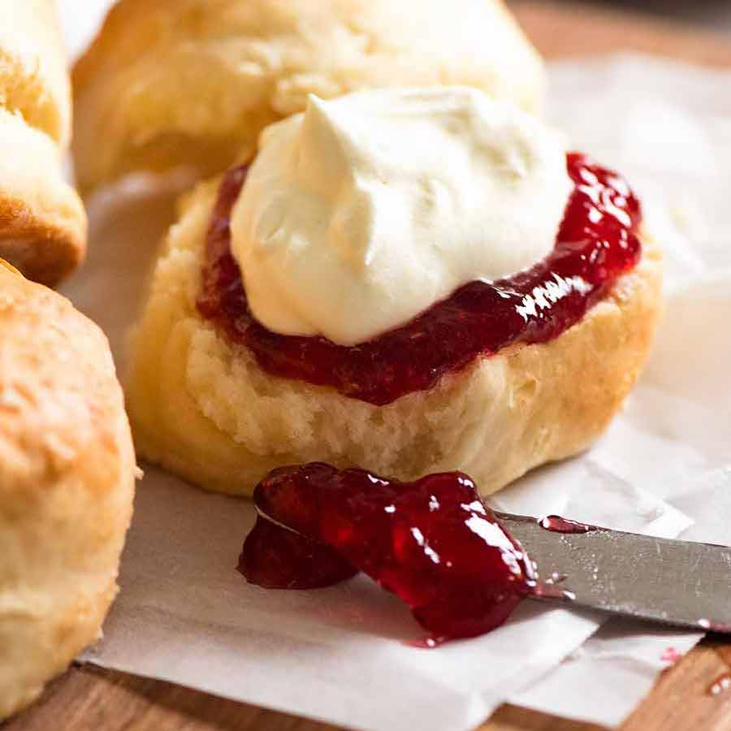

Scones

Scones, Scones and More Scones
Fill your home with the smell of freshly baked scones.
Taste members love them and we think the Country
Women's Association would approve!
Ingredients
- Plain flour, for dusting
- 3 cups self-raising flour
- 80g butter, chilled and cubed
- 1-1 1/4 cups milk
- Jam, to serve
- Whipped cream, to serve
Method
-
Preheat oven to 200°C. Sift self-raising flour into a
large bowl.
-
Using your fingertips, rub butter into flour until
mixture resembles breadcrumbs.
-
Make a well in the centre. Add 1 cup of milk . Mix with
a flat-bladed knife until mixture forms a soft dough,
adding more milk if required. Turn onto a lightly floured
surface. Knead gently until smooth (don't knead dough
too much or scones will be tough).
-
Lightly dust a flat baking tray with plain flour.
-
Pat dough into a 2cm-thick round. Using a 5cm (diameter)
round cutter, cut out 12 rounds. Press dough together
and cut out remaining 4 rounds. Place scones onto
prepared baking tray, 1cm apart. Sprinkle tops with
a little plain flour. Bake for 20 to 25 minutes or
until golden and well risen. Transfer to a wire rack.
Serve warm with jam and cream.